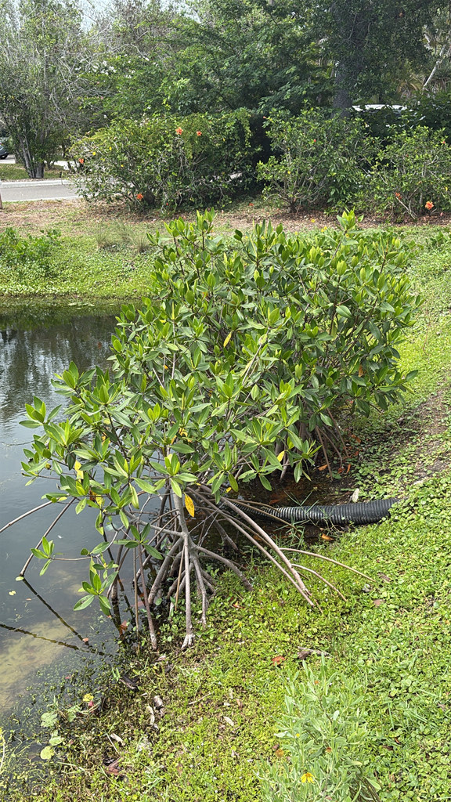

- The seeds germinate on the tree and fall into the water as fully developed torpedo-shaped seedlings up to 12 inches long — they can float for over a year before taking root, crossing entire ocean basins.
- The name 'red' refers to the bright red color of the wood and roots when cut — the living tree itself shows no red at all.
- Red Mangroves are protected by Florida law — trimming or removing them without a permit is illegal, reflecting how critical they are to the state's coastline.
- Mangrove forests store carbon at a rate that rivals or exceeds tropical rainforests per acre — making this tree one of Florida's most important climate assets.
Native to intertidal coastal zones of Florida, the Caribbean, and tropical America from Mexico to Brazil, and West Africa. In Florida found along tidal shorelines from Levy County on the Gulf Coast and St. Johns County on the Atlantic Coast southward — restricted by cold sensitivity near the northern limits.
- The Red Mangrove doesn't just grow in the water — it engineers the coast. Sediments trapped in the prop root matrix gradually build up over decades, converting open water into land. Florida's southern coastline is substantially shaped by mangrove action over thousands of years. Remove the mangroves and the shore retreats; plant them and the shore advances.
- The prop roots are not just structural — they breathe. The roots absorb oxygen directly through pores in the bark, allowing the tree to survive in waterlogged, oxygen-depleted sediment that would kill virtually any other tree. The entire architecture is a solution to a problem other plants never solved.
- The viviparous seeds are one of botany's more elegant adaptations. The propagule — a fully developed seedling — can float for over a year, surviving in salt water and traveling enormous distances. When it finally touches sediment of the right depth, it roots within hours. Single propagules have established new mangrove populations on distant islands.
- In Florida, all three native mangrove species are legally protected. Trimming or removal without a permit is illegal under Florida Statute 403.9326 — a recognition by the state that these trees are infrastructure, not just vegetation.
The Red Mangrove's prop root matrix is one of the most productive wildlife habitats on Florida's coast. The underwater tangle of roots serves as a nursery for juvenile snook, tarpon, redfish, snapper, and dozens of other fish species — providing the complex structure and predator refuge that young fish require to survive. Crabs, shrimp, oysters, sponges, and barnacles colonize the submerged roots.
The emergent structure hosts nesting and roosting colonies of herons, egrets, roseate spoonbills, cormorants, and Anhingas. Alligators rest in the root zones. Manatees shelter in mangrove-fringed bays. Almost every commercially important seafood species in Florida spends part of its juvenile life in a mangrove root system.
seeds germinate on the parent tree while still attached. The propagule (a fully formed seedling) drops into the water when mature and can float for over a year before rooting.
Small, pale yellow, four-petaled, appearing year-round. Self-compatible — can produce propagules without cross-pollination.
6 to 12 inches long, cigar-shaped, green. The most distinctive reproductive structure in Florida's native flora.
Arching, reddish-brown prop roots descending from the trunk and lower branches into the water, creating the iconic mangrove silhouette. Roots absorb oxygen through lenticel pores.
Dark green, leathery, elliptic, 1.5 to 6 inches long — thick with a short petiole.
Gray and furrowed on mature trunks; smooth and reddish on young stems. Inner bark, roots, and twigs reveal reddish-pink coloring when cut — the source of the common name.
The arching prop roots are unmistakable. Look for the torpedo-shaped propagules hanging from the branches or floating in the water below the tree. Turn over a prop root — the pore-covered surface absorbs the oxygen the roots cannot get from the sediment.
This isn't a food plant — the bark has traditional uses in medicine and leather tanning — but it's harmless, with no known toxicity to people or animals.
- © Randall Carter (CC-BY-NC), via iNaturalist